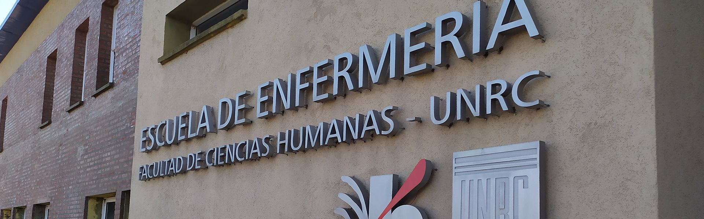

Para la Dra. Cristina Torres, investigadora de la Facultad de Ciencias Exactas,
Físico-Químicas y Naturales “la capacidad de los recursos humanos que posee Argentina y, en particular, nuestra universidad no se pone en discusión. Siempre hemos contado con personal altamente calificado con rápida respuesta de adaptación para resolver problemas y con mucha voluntad de trabajo. Si tuviera que mencionar nuestro talón de Aquiles es la falta de equipamiento por el alto costo que poseen. Y en estos momentos, que necesitamos respuesta rápidas, ello se nota y mucho”. Planes
complementa en el mismo sentido que “el equipamiento alto costo necesita de una ingeniería económica muy fluida y solvente, de lo contrario es imposible acceder a ello. Adentrase en ciertas disciplinas hoy conlleva un dinero muy importante y este no abunda. Pero esta ingeniería económica de la que te hablaba debe aplicar para que todo el sistema sea factible”.
Está claro
que investigar en ciencias exactas, médicas y algunas ingenierías, por mencionar áreas estrictamente relacionadas con el Covid-19, parece ser un sendero lleno de escollos. El valor de los insumos, los reactivos y del equipamiento
hace, en alguno casos, que sea una tarea titánica cuando no imposible. El impacto de economía en el desarrollo científico en Argentina es de vieja data. Se ha demostrado que cada vez que se requiere de recortes de fondos
económicos a actividades subsidiadas por el estado, una de las primeras áreas que sufre es la científica. Science, una de las publicaciones más prestigiosas del mundo, advirtió sobre impacto del ajuste que sufrió la ciencia nacional
en los últimos 4 años. Afirma que el acuerdo con el FMI trajo consecuencias “dramáticas”. La inversión en I+D fue solamente del 0,26 por ciento del producto bruto interno en 2018, en lugar del 0,53 por ciento
que había tenido tres años antes.
Añadido a esto, la integración con el sector privado es aún una deuda pendiente que podría solventar ese déficit económico. Evidentemente es un aspecto que requiere atención, puesto que pareciera que
las intenciones son buenas, pero quedan sólo en eso. La articulación con el sector privado permite, no sólo la incorporación de capitales sino que, además, un producto tome relevancia a escala productiva. Cuidado,
no se trata aquí que los actores del sector privado impongan, según sus intereses y criterios, las líneas prioritarias de investigación sino, por contrapartida, que estos acudan al sector público en la búsqueda de
la innovación o el perfeccionamiento y sea el primero el que permita su fabricación y comercialización.
Un ejemplo de ello, es el NeoKit de detección rápida del virus, que fue desarrollado por un Instituto de
CONICET, aprobado por ANMAT, pero que necesitó asociarse a un laboratorio industrial para poder elaborarlo en cantidad –se prevén 100 mil unidades antes de julio-, no sólo por los métodos de producción sino también
por otras herramientas requeridas como la modelización de negocios.
Santiago Chaqui, postula que “los planteos teóricos que fundamentan la gestión de políticas a través de redes público-privadas se asientan es un diseño de redes de instituciones, sumado a una estrategia dirigida a promover fuertemente la transferencia de tecnología al sector productivo, así como el fortalecimiento de los vínculos entre empresas, universidades y centros de investigación públicos, conforma una base sobre la cual luego se establecen los acuerdos público-privados más específicos. Por tanto, debería tratarse de un sistema de instituciones interconectadas para crear, almacenar y transferir el conocimiento, competencias y artefactos que definen las nuevas tecnologías” (Chaqui, 2017:45).
Análisis de nuestros investigadores e infectólogos con respecto a la debilidades y fortalezas del sistema nacional de ciencia y tecnología y, nuestra universidad y ciudad en particular, frente al COVID-19.
“La capacidad de los recursos humanos que posee Argentina y, en particular, nuestra universidad no se pone en discusión. Si tuviera que mencionar nuestro talón de Aquiles es la falta de equipamiento por el alto costo que poseen”.
"Considero que el financiamiento de las universidades tuviera lineamientos propios. En el “debe” tiene que haber una relación más sólida con las empresas e instituciones públicas y privadas para la consecución de fondos externos"
"En Río Cuarto hoy, la situación es estable pero hay que seguir trabajando. La meseta que atravesamos nos permite para continuar la articulación con las clínicas privadas, aumentar la cantidad de hisopados y cuidar al personal esencial”